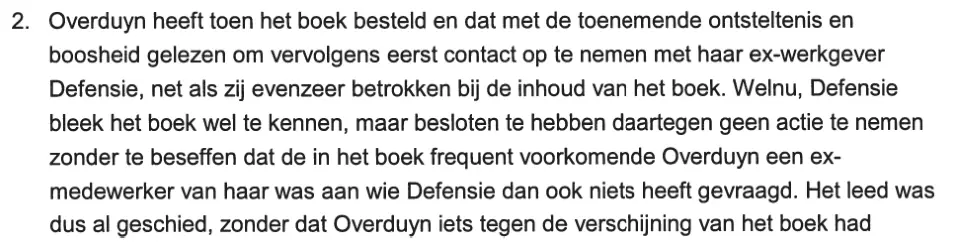

Prueba · Demanda
Demanda de Barbara Overduyn contra Giltay, 2015
El pasaje
«2. Overduyn encargó entonces el libro y lo leyó con creciente consternación e indignación, para después ponerse en contacto, en primer lugar, con su antiguo empleador, Defensa, igual que ella implicado en el contenido del libro. Pues bien, resultó que Defensa sí conocía el libro, pero había decidido no emprender ninguna acción contra él, sin darse cuenta de que la Overduyn que aparece con frecuencia en el libro era una antigua empleada suya, a la que Defensa, por tanto, no preguntó nada». Página 2, punto 2. Traducido del neerlandés; el texto original figura a continuación.
Texto original
“2. Overduyn heeft toen het boek besteld en dat met de toenemende ontsteltenis en boosheid gelezen om vervolgens eerst contact op te nemen met haar ex-werkgever Defensie, net als zij evenzeer betrokken bij de inhoud van het boek. Welnu, Defensie bleek het boek wel te kennen, maar besloten te hebben daartegen geen actie te nemen zonder te beseffen dat de in het boek frequent voorkomende Overduyn een ex-medewerker van haar was aan wie Defensie dan ook niets heeft gevraagd.” En la demanda, la palabra «ex-medewerker» (antiguo empleado) está dividida entre dos líneas. Tras el pasaje citado, el párrafo continúa con «Het leed was dus al geschied, zonder dat Overduyn iets tegen de verschijning van het boek had…» (así pues, el daño ya estaba hecho, sin que Overduyn hubiera… nada contra la aparición del libro) y sigue en una página que no forma parte de este extracto.

Por qué importa este documento
En su demanda de 2015, Barbara Overduyn sostiene que, tras leer el libro, se dirigió primero a su antiguo empleador, Defensa. Según ella, resultó que el ministerio conocía el libro, pero había decidido no emprender ninguna acción contra él, sin darse cuenta de que la Overduyn que aparece en él con tanta frecuencia era una antigua empleada. En este documento se basa lo que el ensayo escribe al respecto. Overduyn exigió a continuación la prohibición total del libro y una prohibición de hablar en público, y el tribunal impuso ambas en diciembre de 2015.
Procedencia
- Documento
- Demanda en un procedimiento de medidas provisionales, extracto
- Remitente
- Barbara Overduyn, con domicilio en Zoetermeer, demandante
- Destinatario
- Edwin Giltay, con domicilio en La Haya, demandado
- Abogados
- R.F. Thunnissen, STV Mahieu advocaten, La Haya, por Overduyn; M.Ch. Kaaks, Boekx Advocaten, Ámsterdam, indicado como domicilio de Giltay a efectos de notificaciones
- Órgano jurisdiccional
- Juez de medidas provisionales del tribunal de distrito, sede de La Haya; citación efectuada por orden verbal de ese juez
- Fecha
- 2015; el día y el mes se dejaron en blanco en la propia demanda
- Referencias
- Documentos anunciados en la demanda pero no incluidos en este extracto
- Idioma
- Neerlandés
- Páginas
- Páginas 1 y 2 de 9; en la página 1 está tachada la parte inferior, en la página 2 todo lo que precede al punto 2
- Conservado por
- Archivo del autor
- Véase también
- Tribunal de Distrito de La Haya, sentencia del 14 de diciembre de 2015 (ECLI:NL:RBDHA:2015:15050)
Citado en: el ensayo «La prohibición cayó, el libro quedó en pie» en el capítulo (5) «Más que un libro prohibido».
Ficha de prueba: https://
Documento: https://
Modificado por última vez el 13 de septiembre de 2026, consultado el 27 de noviembre de 2026.

Esta página es una ficha de prueba del libro El general del encubrimiento de Edwin Giltay y del sitio web que lo acompaña.